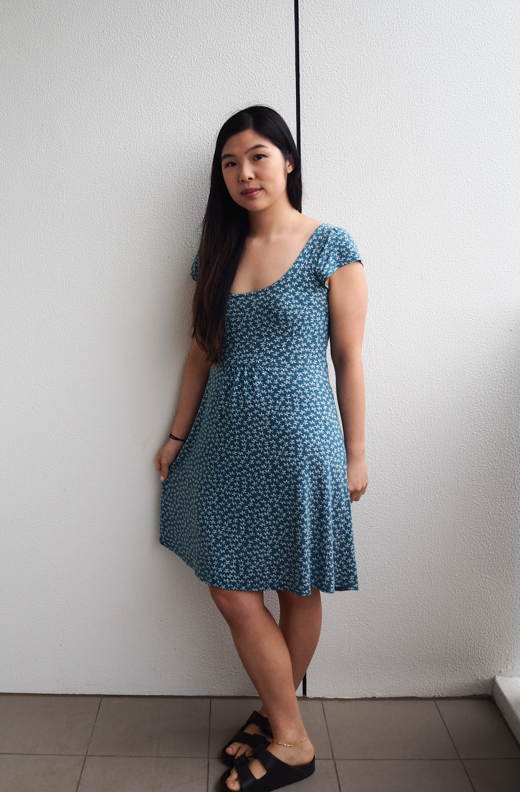

Welcome to my blog
Hi my name is Susan, I reside in Sydney, Australia. My background was in the medical field however after graduating and working within it for 4 years I decided it was not for me.
So I decided to look at what other options were out there and hence have ended up here, where I'll be documenting my journey into becoming a web developer.
Here is a picture of a kitten because I love them.

My interests
- visual arts in particular to watercolour
- cooking
- excercise
- hiking and camping
A paragraph of information about who you are, where you live, and what you currently do for work
Another paragraph describing what you'd like to do in web design and development
Make a list of three important things to know about you
Include a favorite quote, with citation for the person who said it
Include at least one picture of yourself
Link to a website that you like to visit frequently
If you still need more to do, make a page about some of your hobbies and activities. Include:
What is this hobby exactly?
How does it make you feel?
Where have you traveled because of your hobby? What other life experiences has your hobby provided, that you might not otherwise experience?
Photos and/or videos of your hobby in action
Links to websites describing your hobby, or where hobbyists discuss what they do
If you manage to get as far as creating both web pages, link them together with a navigation bar.
When I'm not pursuiting my interests, you can find me documenting my journey here or on my social pages.
My Socials
Instagram
Youtube
Go back to my hompage .
You can find me roaming around this area